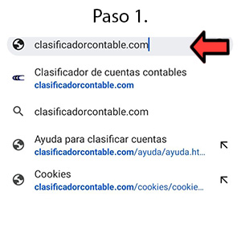
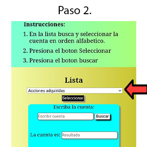
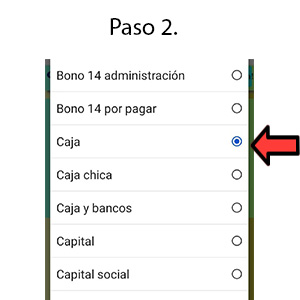
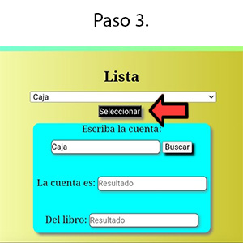
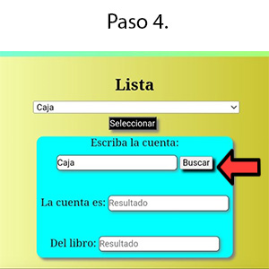

Este clasificador contable nos ayuda a saber si nuestra cuenta en un activo o pasivo, del libro Balance Beneral,
ganancia o perdida del libro Estado de Resultados y debe y haber del Costo de produccion, pero lo puedes utilizar
por ejemplo en la clasificación de un Balance de saldos, para saber si es activo, pasivo, perdida o ganancia y tu
puedes ordenar en debe y haber, contamos con un aproximado de 370 cuentas.
1/6
2/6
3/6
4/6
5/6
6/6
Es de mucha utilidad para los jóvenes estudiantes que se estan acercando a la contabilidad, les ayudara a saber
como clasificar las cuentas o para alguien con experiencia, pero que se le olvidó alguna cuenta, la puede buscar y saber a
que clasificación pertenece, muy fácil y rápido.